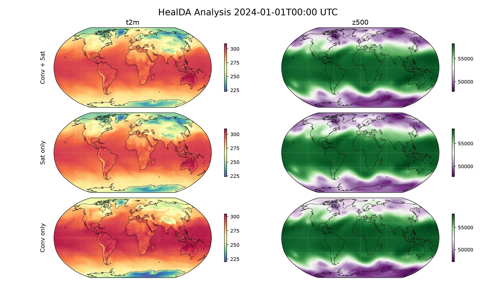
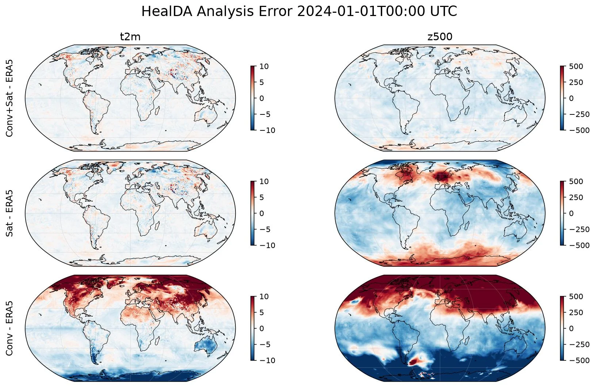

HealDA Global Data Assimilation¶
Producing a global weather analysis from satellite and in-situ observations.
This example demonstrates how to use the HealDA data assimilation model to produce a global weather analysis on a HEALPix grid from sparse in-situ (conventional) and satellite radiance observations sourced from the NOAA UFS replay archive. Three runs are compared: conventional observations only, satellite observations only, and both combined to illustrate the impact of each observation type.
In this example you will learn:
- How to load and initialise the HealDA data assimilation model
- Fetching UFS conventional and satellite observation DataFrames
- Running the model with different observation combinations
- Comparing the assimilated global fields against ERA5 data
Set Up¶
This example requires the following components:
- Assimilation Model: HealDA
earth2studio.models.da.HealDA. - Datasource (conv): UFS conventional observations
earth2studio.data.UFSObsConv. - Datasource (sat): UFS satellite observations
earth2studio.data.UFSObsSat.
HealDA is a stateless neural-network-based data assimilation model that ingests conventional (radiosonde, surface station, GPS-RO, etc.) and satellite radiance observations and produces a single global weather analysis on a HEALPix level-6 grid.
import os
os.makedirs("outputs", exist_ok=True)
from dotenv import load_dotenv
load_dotenv() # TODO: make common example prep function
from datetime import timedelta
import numpy as np
import torch
from loguru import logger
from tqdm import tqdm
logger.remove()
logger.add(lambda msg: tqdm.write(msg, end=""), colorize=True)
from earth2studio.data import NCAR_ERA5, UFSObsConv, UFSObsSat, fetch_dataframe
from earth2studio.models.da import HealDA
# Load the default model package (downloads checkpoint from HuggingFace)
# Setting lat_lon=True regrids the native HEALPix output to a regular lat-lon grid.
package = HealDA.load_default_package()
model = HealDA.load_model(package, lat_lon=True)
model = model.to("cuda:0")
Fetch Observations¶
Pull conventional and satellite observation DataFrames for the analysis time.
The UFS data sources return pandas DataFrames that match the schemas expected by
HealDA.input_coords. We use
[earth2studio.data.fetch_dataframe][] which attaches request_time
metadata required by the model. The time_tolerance parameter defines a time
window around the analysis time so that observations will be retrieved for.
analysis_time = np.array([np.datetime64("2024-01-01T00:00")])
conv_source = UFSObsConv(time_tolerance=(timedelta(hours=-21), timedelta(hours=3)))
conv_schema, sat_schema = model.input_coords()
conv_df = fetch_dataframe(
conv_source,
time=analysis_time,
variable=np.array(conv_schema["variable"]),
fields=np.array(list(conv_schema.keys())),
)
logger.info(f"Fetched {len(conv_df)} conventional observations")
sat_source = UFSObsSat(time_tolerance=(timedelta(hours=-21), timedelta(hours=3)))
sat_df = fetch_dataframe(
sat_source,
time=analysis_time,
variable=np.array(sat_schema["variable"]),
fields=np.array(list(sat_schema.keys())),
)
logger.info(f"Fetched {len(sat_df)} satellite observations")
Console output208 lines
Fetching GSI files: 0%| | 0/25 [00:00<?, ?it/s]
Fetching GSI files: 100%|██████████| 25/25 [00:00<00:00, 22919.69it/s]
2026-08-12 17:39:02.516 | INFO | __main__:<module>:11 - Fetched 8515112 conventional observations
Fetching GSI files: 0%| | 0/90 [00:00<?, ?it/s]
2026-08-12 17:39:02.853 | WARNING | earth2studio.data.ufs:_handle_missing_file:196 - File s3://noaa-ufs-gefsv13replay-pds/2023/12/2023123106/gsi/diag_amsua_n16_ges.2023123106_control.nc4 not found
Fetching GSI files: 0%| | 0/90 [00:00<?, ?it/s]
Fetching GSI files: 57%|█████▋ | 51/90 [00:00<00:00, 161.53it/s]
2026-08-12 17:39:02.854 | WARNING | earth2studio.data.ufs:_handle_missing_file:196 - File s3://noaa-ufs-gefsv13replay-pds/2023/12/2023123106/gsi/diag_amsua_metop-a_ges.2023123106_control.nc4 not found
Fetching GSI files: 57%|█████▋ | 51/90 [00:00<00:00, 161.53it/s]
2026-08-12 17:39:02.854 | WARNING | earth2studio.data.ufs:_handle_missing_file:196 - File s3://noaa-ufs-gefsv13replay-pds/2024/01/2024010100/gsi/diag_mhs_metop-a_ges.2024010100_control.nc4 not found
Fetching GSI files: 57%|█████▋ | 51/90 [00:00<00:00, 161.53it/s]
2026-08-12 17:39:02.855 | WARNING | earth2studio.data.ufs:_handle_missing_file:196 - File s3://noaa-ufs-gefsv13replay-pds/2023/12/2023123118/gsi/diag_amsub_n16_ges.2023123118_control.nc4 not found
Fetching GSI files: 57%|█████▋ | 51/90 [00:00<00:00, 161.53it/s]
2026-08-12 17:39:02.856 | WARNING | earth2studio.data.ufs:_handle_missing_file:196 - File s3://noaa-ufs-gefsv13replay-pds/2024/01/2024010100/gsi/diag_mhs_n18_ges.2024010100_control.nc4 not found
Fetching GSI files: 57%|█████▋ | 51/90 [00:00<00:00, 161.53it/s]
2026-08-12 17:39:02.856 | WARNING | earth2studio.data.ufs:_handle_missing_file:196 - File s3://noaa-ufs-gefsv13replay-pds/2023/12/2023123112/gsi/diag_amsua_n16_ges.2023123112_control.nc4 not found
Fetching GSI files: 57%|█████▋ | 51/90 [00:00<00:00, 161.53it/s]
2026-08-12 17:39:02.857 | WARNING | earth2studio.data.ufs:_handle_missing_file:196 - File s3://noaa-ufs-gefsv13replay-pds/2023/12/2023123112/gsi/diag_mhs_metop-a_ges.2023123112_control.nc4 not found
Fetching GSI files: 57%|█████▋ | 51/90 [00:00<00:00, 161.53it/s]
2026-08-12 17:39:02.857 | WARNING | earth2studio.data.ufs:_handle_missing_file:196 - File s3://noaa-ufs-gefsv13replay-pds/2023/12/2023123118/gsi/diag_amsua_metop-a_ges.2023123118_control.nc4 not found
Fetching GSI files: 57%|█████▋ | 51/90 [00:00<00:00, 161.53it/s]
2026-08-12 17:39:02.857 | WARNING | earth2studio.data.ufs:_handle_missing_file:196 - File s3://noaa-ufs-gefsv13replay-pds/2023/12/2023123118/gsi/diag_amsub_n17_ges.2023123118_control.nc4 not found
Fetching GSI files: 57%|█████▋ | 51/90 [00:00<00:00, 161.53it/s]
2026-08-12 17:39:02.857 | WARNING | earth2studio.data.ufs:_handle_missing_file:196 - File s3://noaa-ufs-gefsv13replay-pds/2023/12/2023123100/gsi/diag_amsua_n17_ges.2023123100_control.nc4 not found
Fetching GSI files: 57%|█████▋ | 51/90 [00:00<00:00, 161.53it/s]
2026-08-12 17:39:02.857 | WARNING | earth2studio.data.ufs:_handle_missing_file:196 - File s3://noaa-ufs-gefsv13replay-pds/2023/12/2023123100/gsi/diag_mhs_n18_ges.2023123100_control.nc4 not found
Fetching GSI files: 57%|█████▋ | 51/90 [00:00<00:00, 161.53it/s]
2026-08-12 17:39:02.857 | WARNING | earth2studio.data.ufs:_handle_missing_file:196 - File s3://noaa-ufs-gefsv13replay-pds/2023/12/2023123106/gsi/diag_amsub_n15_ges.2023123106_control.nc4 not found
Fetching GSI files: 57%|█████▋ | 51/90 [00:00<00:00, 161.53it/s]
2026-08-12 17:39:02.857 | WARNING | earth2studio.data.ufs:_handle_missing_file:196 - File s3://noaa-ufs-gefsv13replay-pds/2023/12/2023123118/gsi/diag_amsua_n17_ges.2023123118_control.nc4 not found
Fetching GSI files: 57%|█████▋ | 51/90 [00:00<00:00, 161.53it/s]
2026-08-12 17:39:02.858 | WARNING | earth2studio.data.ufs:_handle_missing_file:196 - File s3://noaa-ufs-gefsv13replay-pds/2023/12/2023123106/gsi/diag_mhs_n18_ges.2023123106_control.nc4 not found
Fetching GSI files: 57%|█████▋ | 51/90 [00:00<00:00, 161.53it/s]
2026-08-12 17:39:02.858 | WARNING | earth2studio.data.ufs:_handle_missing_file:196 - File s3://noaa-ufs-gefsv13replay-pds/2023/12/2023123106/gsi/diag_amsub_n16_ges.2023123106_control.nc4 not found
Fetching GSI files: 57%|█████▋ | 51/90 [00:00<00:00, 161.53it/s]
2026-08-12 17:39:02.858 | WARNING | earth2studio.data.ufs:_handle_missing_file:196 - File s3://noaa-ufs-gefsv13replay-pds/2024/01/2024010100/gsi/diag_amsua_n17_ges.2024010100_control.nc4 not found
Fetching GSI files: 57%|█████▋ | 51/90 [00:00<00:00, 161.53it/s]
2026-08-12 17:39:02.859 | WARNING | earth2studio.data.ufs:_handle_missing_file:196 - File s3://noaa-ufs-gefsv13replay-pds/2023/12/2023123112/gsi/diag_amsub_n17_ges.2023123112_control.nc4 not found
Fetching GSI files: 57%|█████▋ | 51/90 [00:00<00:00, 161.53it/s]
2026-08-12 17:39:02.859 | WARNING | earth2studio.data.ufs:_handle_missing_file:196 - File s3://noaa-ufs-gefsv13replay-pds/2023/12/2023123100/gsi/diag_amsub_n16_ges.2023123100_control.nc4 not found
Fetching GSI files: 57%|█████▋ | 51/90 [00:00<00:00, 161.53it/s]
2026-08-12 17:39:02.859 | WARNING | earth2studio.data.ufs:_handle_missing_file:196 - File s3://noaa-ufs-gefsv13replay-pds/2024/01/2024010100/gsi/diag_amsub_n17_ges.2024010100_control.nc4 not found
Fetching GSI files: 57%|█████▋ | 51/90 [00:00<00:00, 161.53it/s]
2026-08-12 17:39:02.860 | WARNING | earth2studio.data.ufs:_handle_missing_file:196 - File s3://noaa-ufs-gefsv13replay-pds/2023/12/2023123106/gsi/diag_amsua_n17_ges.2023123106_control.nc4 not found
Fetching GSI files: 57%|█████▋ | 51/90 [00:00<00:00, 161.53it/s]
2026-08-12 17:39:02.861 | WARNING | earth2studio.data.ufs:_handle_missing_file:196 - File s3://noaa-ufs-gefsv13replay-pds/2024/01/2024010100/gsi/diag_amsua_n16_ges.2024010100_control.nc4 not found
Fetching GSI files: 57%|█████▋ | 51/90 [00:00<00:00, 161.53it/s]
2026-08-12 17:39:02.861 | WARNING | earth2studio.data.ufs:_handle_missing_file:196 - File s3://noaa-ufs-gefsv13replay-pds/2024/01/2024010100/gsi/diag_amsub_n15_ges.2024010100_control.nc4 not found
Fetching GSI files: 57%|█████▋ | 51/90 [00:00<00:00, 161.53it/s]
2026-08-12 17:39:02.861 | WARNING | earth2studio.data.ufs:_handle_missing_file:196 - File s3://noaa-ufs-gefsv13replay-pds/2023/12/2023123112/gsi/diag_mhs_n18_ges.2023123112_control.nc4 not found
Fetching GSI files: 57%|█████▋ | 51/90 [00:00<00:00, 161.53it/s]
2026-08-12 17:39:02.861 | WARNING | earth2studio.data.ufs:_handle_missing_file:196 - File s3://noaa-ufs-gefsv13replay-pds/2023/12/2023123100/gsi/diag_amsub_n15_ges.2023123100_control.nc4 not found
Fetching GSI files: 57%|█████▋ | 51/90 [00:00<00:00, 161.53it/s]
2026-08-12 17:39:02.862 | WARNING | earth2studio.data.ufs:_handle_missing_file:196 - File s3://noaa-ufs-gefsv13replay-pds/2023/12/2023123100/gsi/diag_amsua_n16_ges.2023123100_control.nc4 not found
Fetching GSI files: 57%|█████▋ | 51/90 [00:00<00:00, 161.53it/s]
2026-08-12 17:39:02.862 | WARNING | earth2studio.data.ufs:_handle_missing_file:196 - File s3://noaa-ufs-gefsv13replay-pds/2023/12/2023123112/gsi/diag_amsua_n17_ges.2023123112_control.nc4 not found
Fetching GSI files: 57%|█████▋ | 51/90 [00:00<00:00, 161.53it/s]
2026-08-12 17:39:02.862 | WARNING | earth2studio.data.ufs:_handle_missing_file:196 - File s3://noaa-ufs-gefsv13replay-pds/2023/12/2023123112/gsi/diag_amsub_n16_ges.2023123112_control.nc4 not found
Fetching GSI files: 57%|█████▋ | 51/90 [00:00<00:00, 161.53it/s]
2026-08-12 17:39:02.862 | WARNING | earth2studio.data.ufs:_handle_missing_file:196 - File s3://noaa-ufs-gefsv13replay-pds/2023/12/2023123112/gsi/diag_amsub_n15_ges.2023123112_control.nc4 not found
Fetching GSI files: 57%|█████▋ | 51/90 [00:00<00:00, 161.53it/s]
2026-08-12 17:39:02.863 | WARNING | earth2studio.data.ufs:_handle_missing_file:196 - File s3://noaa-ufs-gefsv13replay-pds/2023/12/2023123106/gsi/diag_mhs_metop-a_ges.2023123106_control.nc4 not found
Fetching GSI files: 57%|█████▋ | 51/90 [00:00<00:00, 161.53it/s]
2026-08-12 17:39:02.863 | WARNING | earth2studio.data.ufs:_handle_missing_file:196 - File s3://noaa-ufs-gefsv13replay-pds/2023/12/2023123100/gsi/diag_amsua_metop-a_ges.2023123100_control.nc4 not found
Fetching GSI files: 57%|█████▋ | 51/90 [00:00<00:00, 161.53it/s]
2026-08-12 17:39:02.866 | WARNING | earth2studio.data.ufs:_handle_missing_file:196 - File s3://noaa-ufs-gefsv13replay-pds/2023/12/2023123118/gsi/diag_mhs_metop-a_ges.2023123118_control.nc4 not found
Fetching GSI files: 57%|█████▋ | 51/90 [00:00<00:00, 161.53it/s]
2026-08-12 17:39:02.868 | WARNING | earth2studio.data.ufs:_handle_missing_file:196 - File s3://noaa-ufs-gefsv13replay-pds/2023/12/2023123112/gsi/diag_amsua_metop-a_ges.2023123112_control.nc4 not found
Fetching GSI files: 57%|█████▋ | 51/90 [00:00<00:00, 161.53it/s]
2026-08-12 17:39:02.868 | WARNING | earth2studio.data.ufs:_handle_missing_file:196 - File s3://noaa-ufs-gefsv13replay-pds/2023/12/2023123118/gsi/diag_amsua_n16_ges.2023123118_control.nc4 not found
Fetching GSI files: 57%|█████▋ | 51/90 [00:00<00:00, 161.53it/s]
2026-08-12 17:39:02.869 | WARNING | earth2studio.data.ufs:_handle_missing_file:196 - File s3://noaa-ufs-gefsv13replay-pds/2024/01/2024010100/gsi/diag_amsua_metop-a_ges.2024010100_control.nc4 not found
Fetching GSI files: 57%|█████▋ | 51/90 [00:00<00:00, 161.53it/s]
2026-08-12 17:39:02.869 | WARNING | earth2studio.data.ufs:_handle_missing_file:196 - File s3://noaa-ufs-gefsv13replay-pds/2023/12/2023123100/gsi/diag_amsub_n17_ges.2023123100_control.nc4 not found
Fetching GSI files: 57%|█████▋ | 51/90 [00:00<00:00, 161.53it/s]
2026-08-12 17:39:02.870 | WARNING | earth2studio.data.ufs:_handle_missing_file:196 - File s3://noaa-ufs-gefsv13replay-pds/2024/01/2024010100/gsi/diag_amsub_n16_ges.2024010100_control.nc4 not found
Fetching GSI files: 57%|█████▋ | 51/90 [00:00<00:00, 161.53it/s]
2026-08-12 17:39:02.871 | WARNING | earth2studio.data.ufs:_handle_missing_file:196 - File s3://noaa-ufs-gefsv13replay-pds/2023/12/2023123100/gsi/diag_mhs_metop-a_ges.2023123100_control.nc4 not found
Fetching GSI files: 57%|█████▋ | 51/90 [00:00<00:00, 161.53it/s]
2026-08-12 17:39:02.871 | WARNING | earth2studio.data.ufs:_handle_missing_file:196 - File s3://noaa-ufs-gefsv13replay-pds/2023/12/2023123118/gsi/diag_mhs_n18_ges.2023123118_control.nc4 not found
Fetching GSI files: 57%|█████▋ | 51/90 [00:00<00:00, 161.53it/s]
2026-08-12 17:39:02.871 | WARNING | earth2studio.data.ufs:_handle_missing_file:196 - File s3://noaa-ufs-gefsv13replay-pds/2023/12/2023123118/gsi/diag_amsub_n15_ges.2023123118_control.nc4 not found
Fetching GSI files: 57%|█████▋ | 51/90 [00:00<00:00, 161.53it/s]
2026-08-12 17:39:02.889 | WARNING | earth2studio.data.ufs:_handle_missing_file:196 - File s3://noaa-ufs-gefsv13replay-pds/2023/12/2023123106/gsi/diag_amsub_n17_ges.2023123106_control.nc4 not found
Fetching GSI files: 57%|█████▋ | 51/90 [00:00<00:00, 161.53it/s]
Fetching GSI files: 100%|██████████| 90/90 [00:00<00:00, 256.36it/s]
2026-08-12 17:39:05.550 | WARNING | earth2studio.data.ufs:_compile_dataframe:223 - Cached file missing for s3://noaa-ufs-gefsv13replay-pds/2023/12/2023123100/gsi/diag_mhs_metop-a_ges.2023123100_control.nc4
2026-08-12 17:39:05.550 | WARNING | earth2studio.data.ufs:_compile_dataframe:223 - Cached file missing for s3://noaa-ufs-gefsv13replay-pds/2023/12/2023123106/gsi/diag_mhs_metop-a_ges.2023123106_control.nc4
2026-08-12 17:39:05.550 | WARNING | earth2studio.data.ufs:_compile_dataframe:223 - Cached file missing for s3://noaa-ufs-gefsv13replay-pds/2023/12/2023123112/gsi/diag_mhs_metop-a_ges.2023123112_control.nc4
2026-08-12 17:39:05.550 | WARNING | earth2studio.data.ufs:_compile_dataframe:223 - Cached file missing for s3://noaa-ufs-gefsv13replay-pds/2023/12/2023123118/gsi/diag_mhs_metop-a_ges.2023123118_control.nc4
2026-08-12 17:39:05.550 | WARNING | earth2studio.data.ufs:_compile_dataframe:223 - Cached file missing for s3://noaa-ufs-gefsv13replay-pds/2024/01/2024010100/gsi/diag_mhs_metop-a_ges.2024010100_control.nc4
2026-08-12 17:39:07.442 | WARNING | earth2studio.data.ufs:_compile_dataframe:223 - Cached file missing for s3://noaa-ufs-gefsv13replay-pds/2023/12/2023123100/gsi/diag_mhs_n18_ges.2023123100_control.nc4
2026-08-12 17:39:07.443 | WARNING | earth2studio.data.ufs:_compile_dataframe:223 - Cached file missing for s3://noaa-ufs-gefsv13replay-pds/2023/12/2023123106/gsi/diag_mhs_n18_ges.2023123106_control.nc4
2026-08-12 17:39:07.443 | WARNING | earth2studio.data.ufs:_compile_dataframe:223 - Cached file missing for s3://noaa-ufs-gefsv13replay-pds/2023/12/2023123112/gsi/diag_mhs_n18_ges.2023123112_control.nc4
2026-08-12 17:39:07.443 | WARNING | earth2studio.data.ufs:_compile_dataframe:223 - Cached file missing for s3://noaa-ufs-gefsv13replay-pds/2023/12/2023123118/gsi/diag_mhs_n18_ges.2023123118_control.nc4
2026-08-12 17:39:07.443 | WARNING | earth2studio.data.ufs:_compile_dataframe:223 - Cached file missing for s3://noaa-ufs-gefsv13replay-pds/2024/01/2024010100/gsi/diag_mhs_n18_ges.2024010100_control.nc4
2026-08-12 17:39:08.351 | WARNING | earth2studio.data.ufs:_compile_dataframe:223 - Cached file missing for s3://noaa-ufs-gefsv13replay-pds/2023/12/2023123100/gsi/diag_amsua_metop-a_ges.2023123100_control.nc4
2026-08-12 17:39:08.352 | WARNING | earth2studio.data.ufs:_compile_dataframe:223 - Cached file missing for s3://noaa-ufs-gefsv13replay-pds/2023/12/2023123106/gsi/diag_amsua_metop-a_ges.2023123106_control.nc4
2026-08-12 17:39:08.352 | WARNING | earth2studio.data.ufs:_compile_dataframe:223 - Cached file missing for s3://noaa-ufs-gefsv13replay-pds/2023/12/2023123112/gsi/diag_amsua_metop-a_ges.2023123112_control.nc4
2026-08-12 17:39:08.352 | WARNING | earth2studio.data.ufs:_compile_dataframe:223 - Cached file missing for s3://noaa-ufs-gefsv13replay-pds/2023/12/2023123118/gsi/diag_amsua_metop-a_ges.2023123118_control.nc4
2026-08-12 17:39:08.352 | WARNING | earth2studio.data.ufs:_compile_dataframe:223 - Cached file missing for s3://noaa-ufs-gefsv13replay-pds/2024/01/2024010100/gsi/diag_amsua_metop-a_ges.2024010100_control.nc4
2026-08-12 17:39:11.388 | WARNING | earth2studio.data.ufs:_compile_dataframe:223 - Cached file missing for s3://noaa-ufs-gefsv13replay-pds/2023/12/2023123100/gsi/diag_amsua_n16_ges.2023123100_control.nc4
2026-08-12 17:39:11.388 | WARNING | earth2studio.data.ufs:_compile_dataframe:223 - Cached file missing for s3://noaa-ufs-gefsv13replay-pds/2023/12/2023123106/gsi/diag_amsua_n16_ges.2023123106_control.nc4
2026-08-12 17:39:11.388 | WARNING | earth2studio.data.ufs:_compile_dataframe:223 - Cached file missing for s3://noaa-ufs-gefsv13replay-pds/2023/12/2023123112/gsi/diag_amsua_n16_ges.2023123112_control.nc4
2026-08-12 17:39:11.388 | WARNING | earth2studio.data.ufs:_compile_dataframe:223 - Cached file missing for s3://noaa-ufs-gefsv13replay-pds/2023/12/2023123118/gsi/diag_amsua_n16_ges.2023123118_control.nc4
2026-08-12 17:39:11.388 | WARNING | earth2studio.data.ufs:_compile_dataframe:223 - Cached file missing for s3://noaa-ufs-gefsv13replay-pds/2024/01/2024010100/gsi/diag_amsua_n16_ges.2024010100_control.nc4
2026-08-12 17:39:11.388 | WARNING | earth2studio.data.ufs:_compile_dataframe:223 - Cached file missing for s3://noaa-ufs-gefsv13replay-pds/2023/12/2023123100/gsi/diag_amsua_n17_ges.2023123100_control.nc4
2026-08-12 17:39:11.388 | WARNING | earth2studio.data.ufs:_compile_dataframe:223 - Cached file missing for s3://noaa-ufs-gefsv13replay-pds/2023/12/2023123106/gsi/diag_amsua_n17_ges.2023123106_control.nc4
2026-08-12 17:39:11.388 | WARNING | earth2studio.data.ufs:_compile_dataframe:223 - Cached file missing for s3://noaa-ufs-gefsv13replay-pds/2023/12/2023123112/gsi/diag_amsua_n17_ges.2023123112_control.nc4
2026-08-12 17:39:11.388 | WARNING | earth2studio.data.ufs:_compile_dataframe:223 - Cached file missing for s3://noaa-ufs-gefsv13replay-pds/2023/12/2023123118/gsi/diag_amsua_n17_ges.2023123118_control.nc4
2026-08-12 17:39:11.388 | WARNING | earth2studio.data.ufs:_compile_dataframe:223 - Cached file missing for s3://noaa-ufs-gefsv13replay-pds/2024/01/2024010100/gsi/diag_amsua_n17_ges.2024010100_control.nc4
2026-08-12 17:39:13.462 | WARNING | earth2studio.data.ufs:_compile_dataframe:223 - Cached file missing for s3://noaa-ufs-gefsv13replay-pds/2023/12/2023123100/gsi/diag_amsub_n15_ges.2023123100_control.nc4
2026-08-12 17:39:13.462 | WARNING | earth2studio.data.ufs:_compile_dataframe:223 - Cached file missing for s3://noaa-ufs-gefsv13replay-pds/2023/12/2023123106/gsi/diag_amsub_n15_ges.2023123106_control.nc4
2026-08-12 17:39:13.462 | WARNING | earth2studio.data.ufs:_compile_dataframe:223 - Cached file missing for s3://noaa-ufs-gefsv13replay-pds/2023/12/2023123112/gsi/diag_amsub_n15_ges.2023123112_control.nc4
2026-08-12 17:39:13.462 | WARNING | earth2studio.data.ufs:_compile_dataframe:223 - Cached file missing for s3://noaa-ufs-gefsv13replay-pds/2023/12/2023123118/gsi/diag_amsub_n15_ges.2023123118_control.nc4
2026-08-12 17:39:13.462 | WARNING | earth2studio.data.ufs:_compile_dataframe:223 - Cached file missing for s3://noaa-ufs-gefsv13replay-pds/2024/01/2024010100/gsi/diag_amsub_n15_ges.2024010100_control.nc4
2026-08-12 17:39:13.462 | WARNING | earth2studio.data.ufs:_compile_dataframe:223 - Cached file missing for s3://noaa-ufs-gefsv13replay-pds/2023/12/2023123100/gsi/diag_amsub_n16_ges.2023123100_control.nc4
2026-08-12 17:39:13.462 | WARNING | earth2studio.data.ufs:_compile_dataframe:223 - Cached file missing for s3://noaa-ufs-gefsv13replay-pds/2023/12/2023123106/gsi/diag_amsub_n16_ges.2023123106_control.nc4
2026-08-12 17:39:13.462 | WARNING | earth2studio.data.ufs:_compile_dataframe:223 - Cached file missing for s3://noaa-ufs-gefsv13replay-pds/2023/12/2023123112/gsi/diag_amsub_n16_ges.2023123112_control.nc4
2026-08-12 17:39:13.463 | WARNING | earth2studio.data.ufs:_compile_dataframe:223 - Cached file missing for s3://noaa-ufs-gefsv13replay-pds/2023/12/2023123118/gsi/diag_amsub_n16_ges.2023123118_control.nc4
2026-08-12 17:39:13.463 | WARNING | earth2studio.data.ufs:_compile_dataframe:223 - Cached file missing for s3://noaa-ufs-gefsv13replay-pds/2024/01/2024010100/gsi/diag_amsub_n16_ges.2024010100_control.nc4
2026-08-12 17:39:13.463 | WARNING | earth2studio.data.ufs:_compile_dataframe:223 - Cached file missing for s3://noaa-ufs-gefsv13replay-pds/2023/12/2023123100/gsi/diag_amsub_n17_ges.2023123100_control.nc4
2026-08-12 17:39:13.463 | WARNING | earth2studio.data.ufs:_compile_dataframe:223 - Cached file missing for s3://noaa-ufs-gefsv13replay-pds/2023/12/2023123106/gsi/diag_amsub_n17_ges.2023123106_control.nc4
2026-08-12 17:39:13.463 | WARNING | earth2studio.data.ufs:_compile_dataframe:223 - Cached file missing for s3://noaa-ufs-gefsv13replay-pds/2023/12/2023123112/gsi/diag_amsub_n17_ges.2023123112_control.nc4
2026-08-12 17:39:13.463 | WARNING | earth2studio.data.ufs:_compile_dataframe:223 - Cached file missing for s3://noaa-ufs-gefsv13replay-pds/2023/12/2023123118/gsi/diag_amsub_n17_ges.2023123118_control.nc4
2026-08-12 17:39:13.463 | WARNING | earth2studio.data.ufs:_compile_dataframe:223 - Cached file missing for s3://noaa-ufs-gefsv13replay-pds/2024/01/2024010100/gsi/diag_amsub_n17_ges.2024010100_control.nc4
2026-08-12 17:39:13.494 | INFO | __main__:<module>:20 - Fetched 4378286 satellite observationsObservation Locations¶
Plot the spatial distribution of conventional and satellite observations to visualise their coverage before running the assimilation. There are 12-14 million observations typically for the model's 24-hour time window.
import cartopy.crs as ccrs
import matplotlib.pyplot as plt
plt.close("all")
fig, axes = plt.subplots(
1,
2,
subplot_kw={"projection": ccrs.Robinson()},
figsize=(16, 4),
)
# Conventional observations
ax = axes[0]
ax.set_global()
ax.coastlines(linewidth=0.5)
ax.gridlines(linewidth=0.3, alpha=0.5)
ax.scatter(
conv_df["lon"].values[::10],
conv_df["lat"].values[::10],
s=0.1,
alpha=0.3,
c="tab:blue",
transform=ccrs.PlateCarree(),
)
ax.set_title(f"Conventional obs (n={len(conv_df):,})", fontsize=13)
# Satellite observations
ax = axes[1]
ax.set_global()
ax.coastlines(linewidth=0.5)
ax.gridlines(linewidth=0.3, alpha=0.5)
ax.scatter(
sat_df["lon"].values[::10],
sat_df["lat"].values[::10],
s=0.1,
alpha=0.3,
c="tab:orange",
transform=ccrs.PlateCarree(),
)
ax.set_title(f"Satellite obs (n={len(sat_df):,})", fontsize=13)
fig.suptitle(
f"Observation Locations {str(analysis_time[0])[:16]} UTC",
fontsize=15,
)
plt.tight_layout()
plt.savefig("outputs/22_healda_obs_locations.jpg", dpi=150)

DA models can be called directly for stateless inference or via
create_generator for stateful (iterative)
assimilation workflows. Here we use the direct call API to invoke the model.
HealDA is designed to work with the (-21, 3) hour observation window from the UFS replay archive using both conventional and satellite observations. However, the DA model interface is flexible enough to accept different time windows and observation sources. Below we test three configurations - conventional only, satellite only, and proper combined - to illustrate the impact each observation type has on the analysis.
torch.manual_seed(42)
result_both = model(conv_obs=conv_df, sat_obs=sat_df)
logger.info(f"Combined analysis shape: {result_both.shape}")
Console output1 line
2026-08-12 17:39:23.799 | INFO | __main__:<module>:3 - Combined analysis shape: (1, 74, 181, 360)torch.manual_seed(42)
result_sat = model(sat_obs=sat_df)
logger.info(f"Sat-only analysis shape: {result_sat.shape}")
Console output1 line
2026-08-12 17:39:25.740 | INFO | __main__:<module>:3 - Sat-only analysis shape: (1, 74, 181, 360)torch.manual_seed(42)
result_conv = model(conv_obs=conv_df)
logger.info(f"Conv-only analysis shape: {result_conv.shape}")
Console output1 line
2026-08-12 17:39:28.203 | INFO | __main__:<module>:3 - Conv-only analysis shape: (1, 74, 181, 360)Post Processing¶
Because we loaded the model with lat_lon=True the output is already on a
regular equiangular lat-lon grid, so no manual regridding is needed.
Compare the three runs for surface temperature (t2m) and geopotential 500 hPa
(z500). Each row shows a different observation configuration.
plt.close("all")
plot_vars = ["t2m", "z500"]
titles = ["Conv + Sat", "Sat only", "Conv only"]
results = [result_both, result_sat, result_conv]
projection = ccrs.Robinson()
fig, axes = plt.subplots(
len(results),
len(plot_vars),
subplot_kw={"projection": projection},
figsize=(14, 8),
)
fig.subplots_adjust(wspace=0.02, hspace=0.08, left=0.1, right=0.9)
lat = results[0].coords["lat"].values
lon = results[0].coords["lon"].values
cmaps = ["Spectral_r", "PRGn"]
def to_numpy(arr):
"""CuPy / Numpy helper function"""
return arr.get() if hasattr(arr, "get") else arr
for row, (title, da) in enumerate(zip(titles, results)):
for col, var in enumerate(plot_vars):
ax = axes[row, col]
field = to_numpy(da.sel(variable=var).data[0])
im = ax.pcolormesh(
lon,
lat,
field,
transform=ccrs.PlateCarree(),
cmap=cmaps[col],
)
ax.coastlines(linewidth=0.5)
ax.gridlines(linewidth=0.3, alpha=0.5)
fig.colorbar(im, ax=ax, shrink=0.6)
if row == 0:
ax.set_title(var, fontsize=14)
if col == 0:
ax.text(
-0.05,
0.5,
title,
fontsize=12,
va="bottom",
ha="center",
rotation="vertical",
rotation_mode="anchor",
transform=ax.transAxes,
)
fig.suptitle(f"HealDA Analysis {str(analysis_time[0])[:16]} UTC", fontsize=18, y=0.97)
plt.tight_layout()
plt.savefig("outputs/22_healda_analysis.jpg", dpi=150)

HealDA vs ERA5¶
Next fetch ERA5 reanalysis at 0.25° resolution from the NCAR archive to compare against the assimilated fields. HealDA outputs standard Earth2Studio variable names so we can query ERA5 with the same identifiers. We expect the runs that are missing an observation source to show larger errors, while the combined run yields the most accurate global prediction.
era5_ds = NCAR_ERA5()
era5_da = era5_ds(analysis_time, plot_vars)
era5_interp = era5_da.interp(lat=lat, lon=lon, method="nearest")
Console output2 lines
Fetching NCAR ERA5 data: 0%| | 0/2 [00:00<?, ?it/s]
Fetching NCAR ERA5 data: 100%|██████████| 2/2 [00:00<00:00, 24.02it/s]diff_titles = ["Conv+Sat - ERA5", "Sat - ERA5", "Conv - ERA5"]
diff_results = [result_both, result_sat, result_conv]
for title, da_pred in zip(diff_titles, diff_results):
for var in plot_vars:
field_pred = to_numpy(da_pred.sel(variable=var).data[0])
field_era5 = to_numpy(era5_interp.sel(variable=var).data[0])
mae = float(np.abs(field_pred - field_era5).mean())
logger.info(f"{title} | {var} MAE: {mae:.4f}")
Console output6 lines
2026-08-12 17:39:59.714 | INFO | __main__:<module>:8 - Conv+Sat - ERA5 | t2m MAE: 0.7994
2026-08-12 17:39:59.714 | INFO | __main__:<module>:8 - Conv+Sat - ERA5 | z500 MAE: 51.1967
2026-08-12 17:39:59.715 | INFO | __main__:<module>:8 - Sat - ERA5 | t2m MAE: 0.8496
2026-08-12 17:39:59.715 | INFO | __main__:<module>:8 - Sat - ERA5 | z500 MAE: 164.9191
2026-08-12 17:39:59.716 | INFO | __main__:<module>:8 - Conv - ERA5 | t2m MAE: 4.3306
2026-08-12 17:39:59.716 | INFO | __main__:<module>:8 - Conv - ERA5 | z500 MAE: 570.9084plt.close("all")
diff_ranges = {"t2m": (-10, 10), "z500": (-500, 500)}
fig, axes = plt.subplots(
len(diff_results),
len(plot_vars),
subplot_kw={"projection": projection},
figsize=(14, 8),
)
fig.subplots_adjust(wspace=0.02, hspace=0.08, left=0.1, right=0.9)
for row, (title, da_pred) in enumerate(zip(diff_titles, diff_results)):
for col, var in enumerate(plot_vars):
ax = axes[row, col]
field_pred = to_numpy(da_pred.sel(variable=var).data[0])
field_era5 = to_numpy(era5_interp.sel(variable=var).data[0])
diff = field_pred - field_era5
im = ax.pcolormesh(
lon,
lat,
diff,
transform=ccrs.PlateCarree(),
cmap="RdBu_r",
vmin=diff_ranges[var][0],
vmax=diff_ranges[var][1],
)
ax.coastlines(linewidth=0.5)
ax.gridlines(linewidth=0.3, alpha=0.5)
fig.colorbar(im, ax=ax, shrink=0.6)
if row == 0:
ax.set_title(var, fontsize=14)
if col == 0:
bbox = ax.get_position()
ax.text(
-0.05,
0.5,
title,
fontsize=12,
va="bottom",
ha="center",
rotation="vertical",
rotation_mode="anchor",
transform=ax.transAxes,
)
fig.suptitle(
f"HealDA Analysis Error {str(analysis_time[0])[:16]} UTC",
fontsize=18,
y=0.97,
)
plt.savefig("outputs/22_healda_differences.jpg", dpi=150, bbox_inches="tight")
